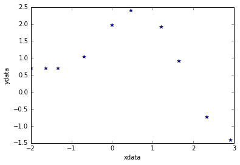

Simple nonlinear least squares curve fitting in Python
The problem
Today we are going to test a very simple example of nonlinear least squares curve fitting using the scipy.optimize module.
%matplotlib inline
import numpy as np
import matplotlib.pyplot as plt
from scipy.optimize import curve_fit
Create data
Let’s assume we have the following points [xdata, ydata] and that we want to fit these data with the following model function using nonlinear least squares:
$F(p_1,p_2,x) = p_1\cos(p_2x) + p_2\sin(p_1x)$
For now, we are primarily interested in the following results:
- The fit parameters
- Sum of squared residuals
xdata = np.array([-2,-1.64,-1.33,-0.7,0,0.45,1.2,1.64,2.32,2.9])
ydata = np.array([0.699369,0.700462,0.695354,1.03905,1.97389,2.41143,1.91091,0.919576,-0.730975,-1.42001])
# Show data points
plt.plot(xdata,ydata,'*')
plt.xlabel('xdata')
plt.ylabel('ydata');

Define fit function
def func(x, p1,p2):
return p1*np.cos(p2*x) + p2*np.sin(p1*x)
Calculate and show fit parameters.
Use a starting guess of $p_1=1$ and $p_2=0.2$
The outputs of the curve_fit function are the following:
-
popt : array of optimal values for the parameters so that the sum of the squared error of $f(xdata, *popt) - ydata$ is minimized
-
pcov : 2d array of the estimated covariance of popt. The diagonals provide the variance of the parameter estimate. To compute one standard deviation errors on the parameters use $perr = np.sqrt(np.diag(pcov))$. If the Jacobian matrix at the solution doesn’t have a full rank, then ‘lm’ method returns a matrix filled with
np.inf, on the other hand ‘trf’ and ‘dogbox’ methods use Moore-Penrose pseudoinverse to compute the covariance matrix.
popt, pcov = curve_fit(func, xdata, ydata,p0=(1.0,0.2))
print("Parameter estimation results:")
print("p1 = ",popt[0]," | p2 = ",popt[1])
print("--------------------------")
print("Covariance matrix of the estimate:")
print(pcov)
Parameter estimation results:
p1 = 1.881850994 | p2 = 0.700229857403
--------------------------
Covariance matrix of the estimate:
[[ 7.52408290e-04 1.00812823e-04]
[ 1.00812823e-04 8.37695698e-05]]
Sum of squares of residuals
Since it’s not given by the curve_fit function, we have to compute it by hand
p1 = popt[0]
p2 = popt[1]
residuals = ydata - func(xdata,p1,p2)
fres = sum(residuals**2)
print("Residuals sum of squares:")
print(fres)
Residuals sum of squared:
0.0538126964188
Plot fitted curve along with data
curvex=np.linspace(-2,3,100)
curvey=func(curvex,p1,p2)
plt.plot(xdata,ydata,'*')
plt.plot(curvex,curvey,'r')
plt.xlabel('xdata')
plt.ylabel('ydata');